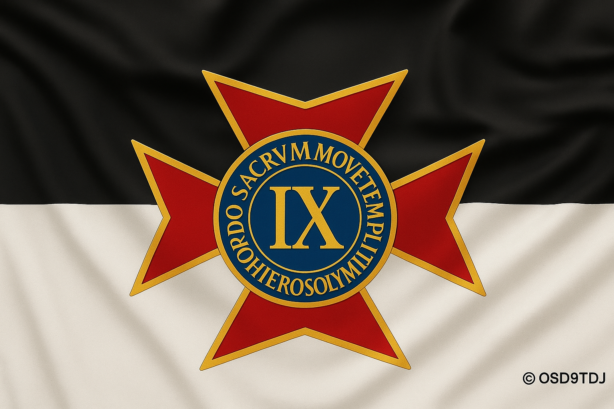

L’Ordre Sacré des Neuf Templiers de Jérusalem ne se limite pas à des prises de position statutaires ou à une seule présence institutionnelle ponctuelle. L’association mène une activité réelle, suivie et régulière, dans un cadre discret, sérieux et conforme à sa vocation culturelle, fraternelle, philosophique et initiatique.
En dehors de nos évènements publics ou occasionnels, l’association se réunit de manière régulière pour conduire des temps d’étude, de réflexion, de transmission et de travail approfondi. Ces rencontres constituent une part essentielle de la vie de l’O.S.D.9.T.D.J. et témoignent du caractère concret, vivant et non fictif de son activité.
In Veritate et Honore.
L’association organise notamment des rencontres d’étude approfondie tous les quinze jours, hors périodes scolaires, généralement le jeudi. Ces temps de travail sont consacrés à des échanges structurés, à l’étude philosophique, à l’approfondissement culturel, à la réflexion symbolique ainsi qu’à la vie fraternelle de l’association.
Ces activités ne sont pas toutes rendues publiques systématiquement, par choix de discrétion, mais elles participent pleinement à la vie réelle et continue de l’association.
Les personnes qui souhaitent découvrir l’association, rencontrer ses membres ou participer à une première réunion de découverte peuvent nous écrire en passant par la page contact du site. Selon les possibilités, il peut être proposé un temps d’échange, une rencontre de présentation ou une venue à une réunion de découverte, dans un esprit d’accueil, de clarté et de respect.
Prendre contactAucun évènement public n’est programmé pour le moment.
Nous vous invitons à revenir consulter cette page régulièrement : nos évènements culturels, fraternels, associatifs et chevaleresques y seront annoncés lorsqu’ils seront ouverts à la communication publique.
Cet évènement a marqué un temps fort de notre démarche en France : une rencontre ouverte au public,
suivie d’une soirée de gala, rassemblant de nombreux invités, dont plusieurs invités de renom.
Cette soirée s’inscrivait également dans le cadre d’un jubilé célébré par l’ordre d’origine
Souverain et Auguste, Ordre des Chevaliers Templiers de Notre-Dame de Sion, mentionné ici à titre historique.
La journée a proposé une vente et dédicaces d’ouvrages, ainsi qu’une dégustation et vente de vins.
La soirée a été l’occasion de célébrer officiellement le lancement de notre association et le début de cette aventure,
dans un esprit de tradition, de transmission et de fraternité.
Une cérémonie d’investiture a été célébrée à cette occasion pour l’accueil des chevaliers français.
Nous adressons enfin nos remerciements à toutes les personnes, soutiens et partenaires qui ont contribué à la réussite
de cette journée et de cette soirée.
L’organisation s’est inscrite, à l’époque, dans un cadre de coopération associative et internationale, en continuité
avec les éléments présentés sur la page Notre histoire.